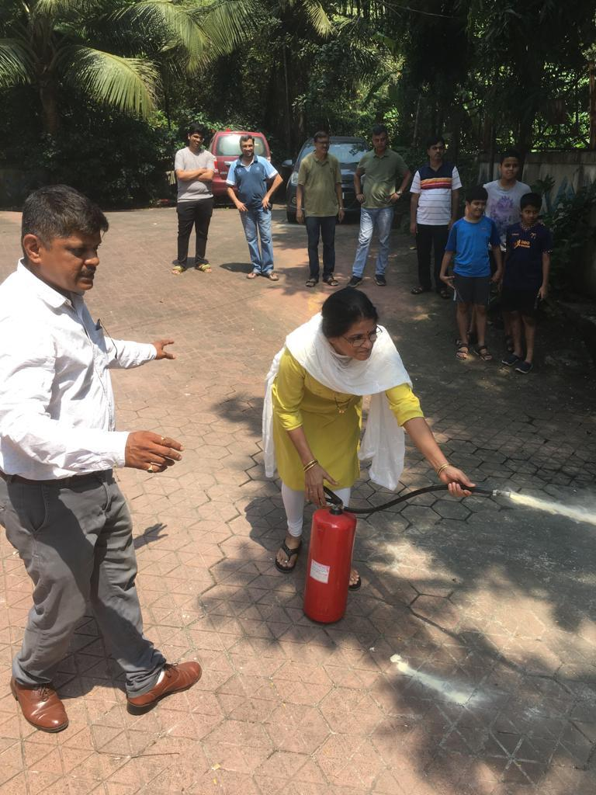

Founder & Principal Fire Consultant • Maharashtra Fire Services Licensed Agency Director

In Mumbai's dense urban topology of high-rise residential societies and complex commercial parks, fire safety is frequently misunderstood as a mere procurement exercise. Society committees often purchase extinguishers or sign basic maintenance contracts without knowing if their water risers hold pressure or if their pumps will start when power trips.
As a Maharashtra Fire Services Licensed Agency Director with over 8 years of engineering practice, Sameer M. Kangutkar founded Samarth Fire Protection System to establish an engineering-led inspection protocol. His approach analyzes the entire life-safety ecosystem: structural egress routes, pressurized riser manifolds, smoke barrier integrity, detector sensitivity, and human emergency readiness.
The Assessment-First Doctrine: "Before proposing a single valve or cylinder, our engineers physically walk the premises. We inspect the booster pump cut-off pressure, test the furthest roof hydrant landing valve, examine refuge area ventilation, and interview the on-site security guards. Only then do we prepare an accurate, transparent engineering plan."
Under Sameer's leadership, Samarth Fire has successfully delivered installations and compliance audits for critical national infrastructure such as a Central Government Nuclear Facility Complex, premier commercial hubs like a Leading Diamond Bourse Commercial Exchange in BKC, educational institutions like a Prominent International IB School Campus in Mulund, and more than 500 cooperative housing societies across the Mumbai Metropolitan Region.
If your building committee is facing an upcoming Form B renewal deadline or has experienced recurring faults in your fire alarm system, you can request an advisory walkthrough directly with Sameer.